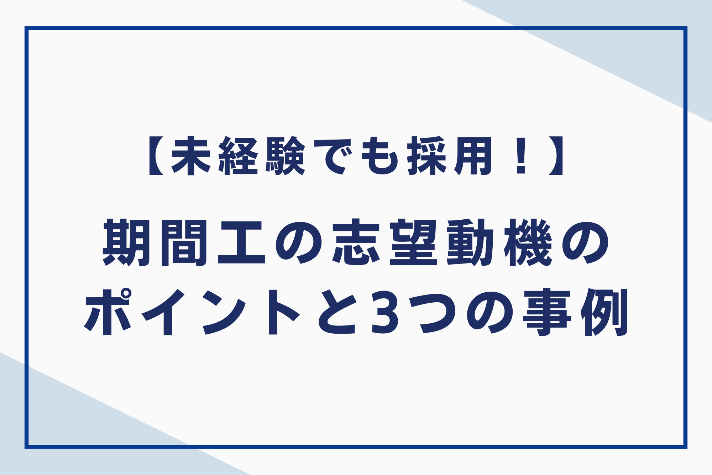
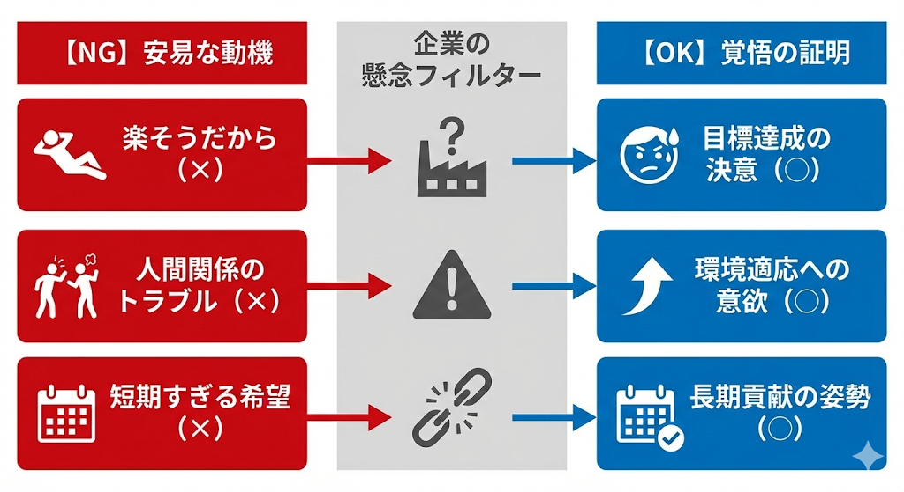
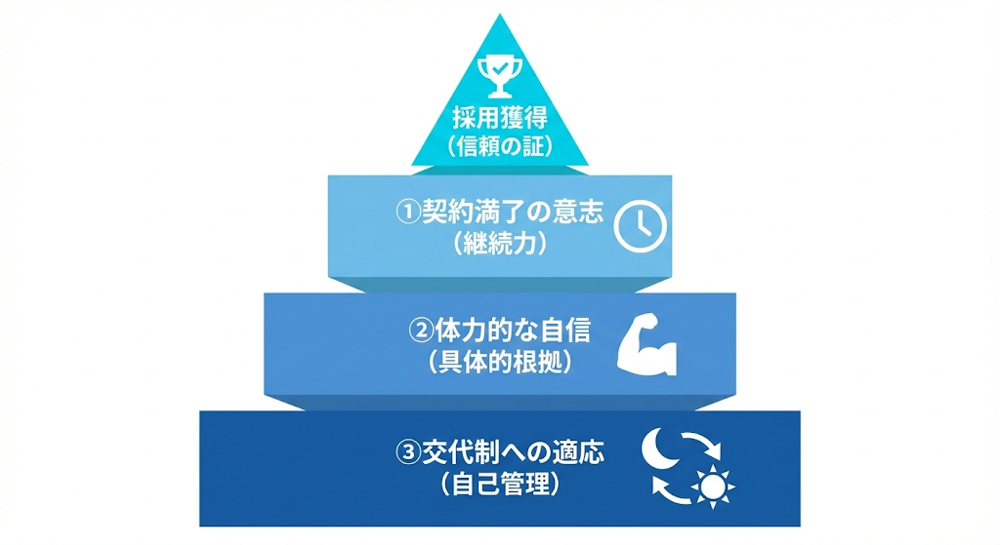
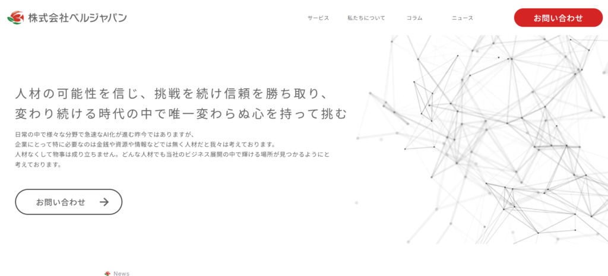

期間工として働きたいが、志望動機をどのように書くべきか悩んでいる方は、多いのではないでしょうか。企業が期間工へ求めているのは「体力があり、途中で辞めない人材」であるという点に尽きます。
自分の経歴や目的に合わせた事例を準備すれば、採用担当者に安心感を与え、合格への距離を縮められます。期間工として採用してもらうためには、以下のポイントを意識しましょう。
- ポイント①契約満了まで働く意志を見せる
- ポイント②体力的な自信を具体的に伝える
- ポイント③交代制勤務への理解を示す
この記事では、期間工の面接を突破するための具体的な例文や、評価を上げるポイント、構成、避けるべきNG事例を解説します。また、よくある質問も紹介していますので、ぜひ参考にしてください。

【目的別】期間工の志望動機の3つの事例
期間工の採用現場では、華美な言葉よりも「なぜ今、この仕事が必要なのか」という切実さと具体性が評価されます。ここでは、多くの志望者が活用できる代表的な事例を紹介します。自分の状況に近いものを選び、詳細を書き換えて活用してください。
事例①目標金額を定めた貯金目的
目標金額を定めた貯金目的の志望動機の例は、以下があげられます。
| 私は1年後までに200万円の貯金を作ることを目標としています。将来、地元で飲食店を開業したいという夢があり、その準備資金を短期間で集中して稼ぎたいと考えています。御社の手厚い報奨金制度や寮完備の環境は、私の目標を達成できると感じ志望いたしました。工場勤務の経験はありませんが、一から仕事を覚えて期間満了まで働き、自分自身の夢を実現させるために頑張ります。 |
この事例では、具体的な金額と「開業」という明確な目的を提示することで、途中で辞めない強い動機付けがあることを証明しています。
事例②運動経験を活かした体力アピール
運動経験を活かした体力に自信があることをアピールする志望動機の例は、以下があげられます。
| 私は学生時代から10年間ラグビーを続けており、体力と忍耐力には自信があります。前職の倉庫作業でも、1日8時間の立ち仕事や重量物の運搬をこなしてきた経験があります。御社の製造ラインは体力的にハードであると伺っておりますが、これまでの経験を活かして即戦力として貢献したいと考えています。自己管理を徹底し、欠勤なく業務に邁進いたします。 |
肉体的なタフさを具体的な競技名や前職の経験で裏付けることで、企業側が抱く「すぐに体力を理由に辞めてしまうのではないか」という不安を払拭できます。
事例③ものづくりへの興味とキャリア形成
ものづくりへの興味とキャリア形成について触れた志望動機の例は、以下があげられます。
| 私は、以前から自動車の構造に興味があり、日本を代表する御社の製造現場で技術の一端に触れたいと考え志望しました。未経験ではありますが、決められたルールを厳守し、正確に作業を進めることには自信があります。期間工として現場の規律を学びながら、将来的には正社員登用試験にも挑戦したいという意欲を持って取り組む所存です。 |
メーカーへの敬意を示しつつ、正社員登用という長期的なキャリアを視野に入れることで、真面目に長く働いてくれる人材であると印象付けられます。
なお、アルバイト・パートから正社員への道筋と選ばれる人の特徴については、こちらの記事で詳しく解説しています。
関連記事：【社員登用とは】アルバイト・パートから正社員への道筋と選ばれる人の特徴を解説

期間工の志望動機で不採用になりやすい3つのNG例
期間工の採用では、志望動機の内容そのものよりも、その背後にある「働く姿勢」が厳しくチェックされます。ここでは、注意すべきNG例を紹介します。
◆NGな志望動機とOKな伝え方のイメージ図

それぞれの内容について詳しくみていきましょう。
NG例①「楽そうだから」という印象を与えない
期間工の仕事は高待遇ですが、その反面で肉体的な過酷さを伴います。このため、志望動機で「寮費無料だから楽に貯金できそう」といった安易な印象を与えると、仕事の厳しさを理解していないと判断されてしまいます。
本音が待遇面であっても、「生活費を抑えられる環境を最大限に活かして、1年で200万円貯めるという目標を必ず達成したい。このために厳しいライン作業も厭わず取り組む」と、覚悟をセットにして伝えましょう。
待遇への魅力に相応した貢献をするという強い決意を添えることが合格への鍵となります。
NG例②人間関係のトラブルを連想させない
期間工の現場はチームワークが重視されるため、退職理由で「人間関係が合わなかった」と伝えると、採用担当者は「自社でもトラブルを起こすのでは」と警戒します。事実に不満があったとしても、それをそのまま口にするのは避けましょう。
退職理由は「より体力に自信のある自分を活かせる環境に挑戦したい」など、前向きな目的へ変換して伝えるのが鉄則です。ネガティブな過去を語るのではなく、新しい環境で協調性を持って働きたいという意欲を示すことで、現場での適応力の高さを印象付けられます。
NG例③短期すぎる希望期間を提示しない
期間工の採用には教育コストがかかるため、企業はできるだけ長く働ける人材を求めています。「3か月だけ働きたい」といった短すぎる希望期間を正直に伝えると、戦力になる前に辞めてしまうと判断され、不採用になるリスクが高まります。
短期間のつもりであっても、面接では「最低でも1年は継続して、契約満了まで貢献したい」と伝えましょう。目標金額から逆算しつつ必要な期間を提示して、長期的に安定して働く姿勢が欠かせません。このように、企業のニーズと自分の目標を擦り合わせることが大切です。
期間工の採用を勝ち取るための3つのポイント
期間工の採用面接において、企業側がもっとも重視しているのは「最後までやり抜く覚悟があるか」という点です。採用担当者の懸念を先回りして解消し、信頼を勝ち取るための具体的なポイントを詳しく見ていきましょう。
◆採用を勝ち取るためのポイントの概要図

それぞれの内容について詳しくみていきましょう。
ポイント①契約満了まで働く意志を見せる
期間工の採用において、企業が最も避けたい事態は、教育コストをかけた人材が契約途中で辞めてしまうことです。このため、志望動機では「何があっても契約満了までやり遂げる」という強い意志を最優先で伝える必要があります。
具体的には、過去のアルバイトや仕事で長期間休まずに勤務した実績を伝えましょう。「3年間無遅刻無欠勤だった」という事実は、言葉以上にあなたの継続力を証明する強力な武器になります。企業側に「この人なら安心して任せられる」と思わせる一言を添えることが大切です。
ポイント②体力的な自信を具体的に伝える
工場のライン作業は、一定のスピードで正確に動き続ける必要があるため、採用担当者は応募者の基礎体力を非常にシビアにチェックしています。単に「体力に自信がある」と述べるのではなく、客観的な事実にもとづいたエピソードを提示しましょう。
たとえば、部活動で培った忍耐力や、前職での過酷な現場経験を具体的に話すと、信憑性が一気に高まります。「毎日5キロのランニングを欠かさない」「趣味でフットサルをしている」などといった数字や実績を交えるのがコツです。タフな現場でも即戦力として動ける根拠を示すと、採用への道が大きく開けます。
なお、期間工がきついと言われる理由と対策については、こちらの記事で詳しく解説しています。
関連記事：期間工の仕事は本当にきつい？きついと言われる7つの理由と対策を徹底解説！
ポイント③交代制勤務への理解を示す
多くの期間工の職場では夜勤を含む交代制勤務が採用されており、生活リズムの急激な変化に耐えられる自己管理能力が求められます。具体的には、前職で夜勤に従事していた経験や、交代制の職場でも体調を崩さず勤務した実績を強調しましょう。
未経験の場合でも、十分な睡眠時間の確保や食事管理など、規則正しい生活を習慣化していることを具体的に伝えてください。昼夜を問わず安定したパフォーマンスを発揮できる姿勢を見せれば、現場での扱いやすさを高く評価されます。
期間工の志望動機の3つの構成
期間工の採用試験において、面接官がどのようなポイントをチェックしているのかを理解することは大切です。ここでは、多くの応募者が参考にしている志望動機の構成要素を、項目に分けて詳しく解説します。
構成①稼ぎたい理由と貯金の目標を明確にする
期間工を志望する際、高収入を目的とすることは非常に正当な理由として評価されます。しかし、単に「お金が欲しい」と伝えるのではなく、具体的な金額と使用用途を提示することが採用への近道です。
たとえば、「1年で200万円貯金して、起業資金に充てる」といった明確な期限と目標がある応募者は、多少の困難があっても目標達成まで粘り強く働くと判断されます。自分の夢や目標のために、なぜ期間工という手段を選んだのかを論理的に説明して、働く熱意を伝えましょう。
構成②過去の経験から体力的な裏付けを示す
期間工の現場では、1日8時間以上にわたる立ち仕事や反復作業が続くため、面接官は「身体が持つか」を懸念しています。この不安を解消するには、過去の具体的な経験にもとづいたエピソードを提示することが不可欠です。
「学生時代に野球部に所属して、3年間毎日厳しい練習に励んだ」や「前職の倉庫作業で1日2万歩以上歩きながら荷物を運んでいた」など、具体的な数字や競技名を出すのがコツです。過去の努力を根拠として示せば、採用担当者はあなたが現場で活躍する姿を容易にイメージできます。
構成③企業の社風や製品への関心を添える
期間工の志望動機において、条件面だけでなく「なぜその企業なのか」を伝えれば、熱意の差別化が図れます。志望しているメーカーの製品に対する愛着や、業界最大手としての安定した生産体制、徹底された安全管理への共感を具体的に述べましょう。
「日本を代表するモノづくりの現場で、品質へのこだわりを学びたい」といった視点は、真面目に規律を守る人材であると好印象を与えます。企業のブランド力や社風を理解して、その組織の一員として貢献したい姿勢を示すと、採用担当者からの信頼度は格段に向上します。
期間工の求人探しなら「株式会社ベルジャパン」

株式会社ベルジャパンは、製造業や期間工の求人紹介において、求職者の希望に寄り添ったきめ細やかなサポート体制が強みです。自分に合ったメーカー選びから、採用されやすい志望動機の添削まで、プロの視点でアドバイスを受けられます。
体力的な不安がある方や、どのメーカーが自分に向いているか分からない方にとって、豊富な非公開求人を持つベルジャパンは心強い味方となります。専任のコンサルタントがあなたのキャリアを丁寧にヒアリングし、最適な案件を提案します。高収入を実現して、目標の貯金額を最短で達成したい方は、ぜひベルジャパンのサポートを受けてみてください。⇒ベルジャパンに相談する
期間工の志望動機でよくある3つの質問
期間工の志望動機でよくある質問をご紹介します。それぞれ詳しくみていきましょう。
質問①職歴に空白期間がある場合はどう説明すべきですか？
正直に理由を伝えてから、現在は働く準備が整っていることを強調しましょう。期間工の採用では、過去の経歴よりも「今、健康でしっかり働けるか」が重視される傾向にあります。
「資格取得のために勉強していた」「家事の手伝いをしていた」など、事実に沿って簡潔に説明すれば問題ありません。その上で、「体力作りは欠かしておらず、即戦力として動ける状態です」と前向きな姿勢を付け加えることで、担当者の不安を払拭できます。
質問②前職を短期間で辞めている場合はどう書けばよいですか？
短期間での離職がある場合は、その事実を隠すのではなく、反省と今後の決意をセットで伝えることが大切です。採用担当者は「またすぐに辞めるのではないか」と懸念しているため、不安を払拭する言葉を選びましょう。
「前職では自身の適性を見誤った部分がありましたが、今回は目的を持って応募しており、契約満了までやり遂げる覚悟です」と正直に伝えてください。期間工は過去の経歴よりも、今の意欲や体力、そして稼ぎたいという切実な目的が重視されるため、誠実に答えれば十分に挽回可能です。
質問③複数のメーカーに応募していることは隠すべきですか？
無理に隠す必要はありませんが、伝え方には工夫が必要です。他社に応募している場合は、「期間工として早く働きはじめたいという強い意欲があるため、複数の可能性を検討しています」と正直に伝えましょう。
その上で、「中でも御社は福利厚生が充実しており、最も志望度が高いです」と、その企業が第一志望であることを明確に示すのがマナーです。一貫性のある説明ができれば、働く意欲が高い人材として評価されます。
納得感のある志望動機を完成させて、期間工として働こう！
志望動機をしっかりと準備することは、採用を勝ち取るだけでなく、あなたが期間工として成功するための第一歩になります。目的意識を持って現場に立つことで、日々の業務も目標達成へのプロセスとして前向きに捉えられます。
以下のポイントを意識して、志望動機を考えましょう。
- ポイント①契約満了まで働く意志を見せる
- ポイント②体力的な自信を具体的に伝える
- ポイント③交代制勤務への理解を示す
この記事で紹介した事例や注意点を参考に、自分の強みを活かした志望動機を練り上げてください。志望動機以外にも履歴書の書き方や面接のマナーなど、事前に準備できることはたくさんあります。1つずつ不安を解消して、自信を持って本番に臨みましょう。
なお、株式会社ベルジャパンは、有料職業紹介業のなかでも豊富な実績ときめ細やかなサポート体制を強みとしており、求職者・企業双方から高い評価をいただいております。独自のネットワークを活かして非公開求人を含む多様な案件をご紹介できる点が大きな特長です。
さらに、専任コンサルタントがキャリアやスキル、ライフスタイルなどを詳しくヒアリングすることで、一人ひとりに最適化されたサポートを実現しています。⇒ベルジャパンに相談する